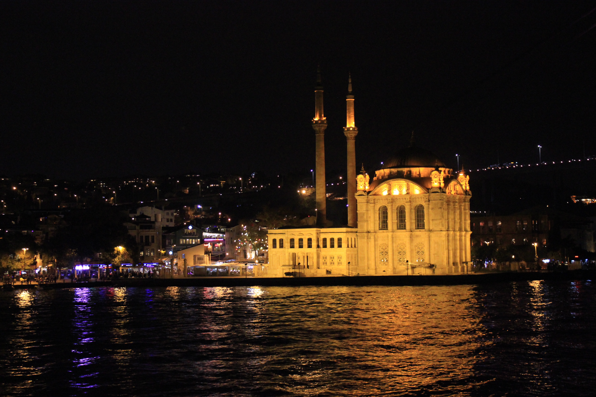

What to do with 48 hours in
ISTANBUL
The Hagia Sophia
One of the oldest and largest buildings in the world, the Hagia Sophia, influenced by both Islamic and Christian culture, is our first stop in Istanbul. Learn More.
The Blue Mosque
Opposite of the Hagia Sophia, the Blue Mosque provides free entry to the public. Don't forget to take off your shoes!

Galata Tower
The only thing more stunning than the view OF the Galata Tower is the view FROM the Galata Tower. Go early to avoid the long line.
Topaki Palace
Find religious artifacts, jewels, weaponry, clocks, and other treasures from the Islamic world inside the palace.

Bosphorous Cruise
Why eat in a restaurant when you can eat on the Bosphorous River and enjoy stunning views of Istanbul's coastline at night.